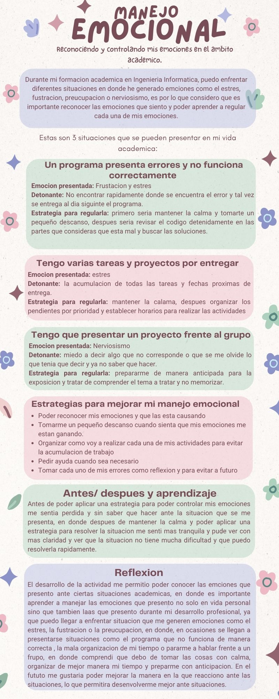
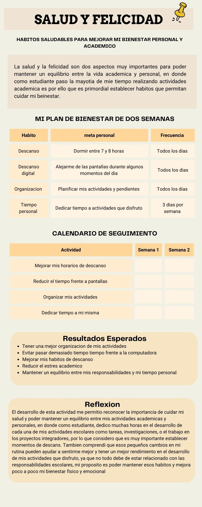

Actividad · Inteligencia emocional
Manejo emocional
Material relacionado con el reconocimiento, la comprensión y la regulación de las emociones. Presenta ideas para responder de manera consciente ante distintas situaciones.
En este apartado se presentan evidencias relacionadas con el manejo de las emociones, la salud y la construcción de hábitos positivos.
Actividades que permiten reconocer la importancia del bienestar emocional y de mantener hábitos que favorezcan una vida saludable.

Material relacionado con el reconocimiento, la comprensión y la regulación de las emociones. Presenta ideas para responder de manera consciente ante distintas situaciones.

Recurso sobre la relación entre la salud, el bienestar físico y emocional y las acciones cotidianas que contribuyen a una vida equilibrada.